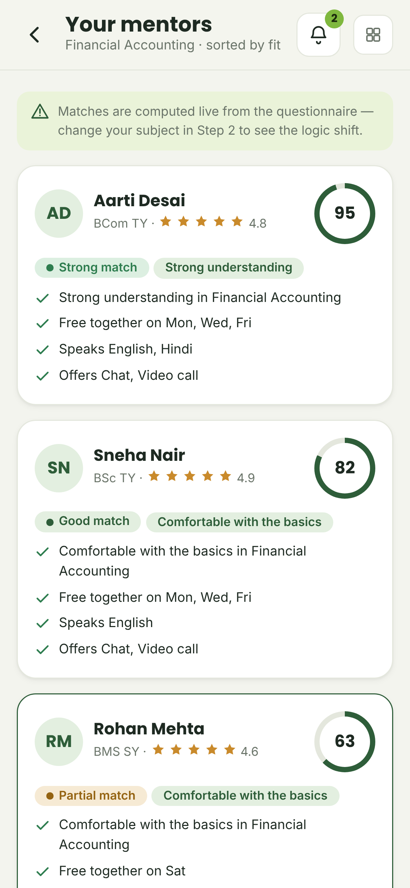
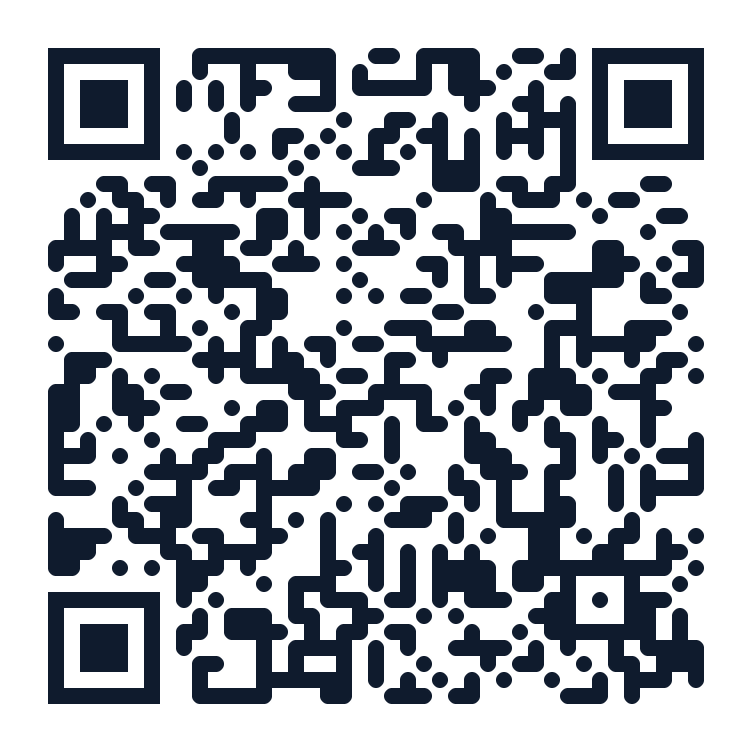
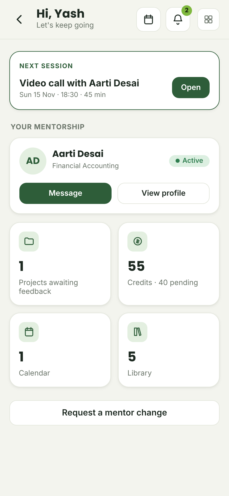

A student says what they want to learn. Another says what they can teach. Connect matches them on subject, confidence, language, format and shared free days — then supports the whole journey.

One short questionnaire drives a real matching engine — and the product is honest when good matches are scarce.
Scored on the mentor's proficiency, your shared free days, language and format. Sorted by real fit.
If fewer than three strong mentors qualify, Connect says so — it never pads the list with weak matches.
Requests, chat, scheduled sessions, a shared library and project feedback — all in one flow.
Connect Credits record activity clearly and are never presented as official marks. The college decides their worth.
One account. Switch between learning and mentoring whenever you like — no second sign-up.
You choose who sees your files, report and block tools in every chat, and no sensitive data is required.

yashskudalkar23.github.io/peer-2-peer-connect
Live now · works in any phone browser
